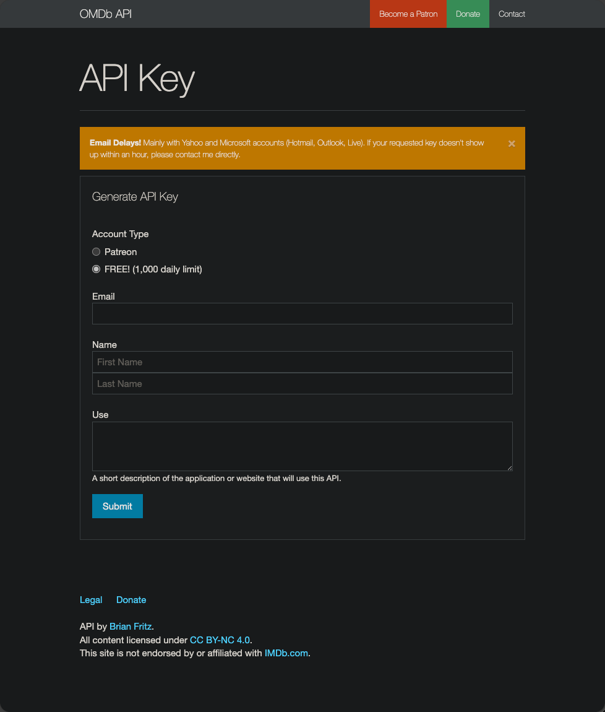

OMDb Ratings¶
Description¶
Pathary uses the OMDb API to fetch both IMDb and Rotten Tomatoes ratings for your movies.
What OMDb provides: - IMDb rating (0.0-10.0 scale) - IMDb vote count - Rotten Tomatoes Critics Score (0-100% scale) - Fresh/Rotten tomato icon display
Info
OMDb API is free for up to 1,000 requests per day. For higher limits, consider a paid tier. Pathary automatically respects rate limits with a 250ms delay between requests.
Getting an OMDb API Key¶
- Visit https://www.omdbapi.com/apikey.aspx
- Select FREE! (1,000 daily limit) for the free tier
- Fill in your email, name, and usage description
- Click Submit to request your API key
- Check your email for the activation link
- Activate your key via the email link

Configuration¶
Via Admin Panel¶
- Navigate to Admin → Server Management
- Click the API Keys tab
- Scroll to OMDb API Configuration
- Enter your API key
- Click Test Connection to verify it works
- Click Save
Via Environment Variable¶
Add to your .env or .env.local file:
Warning
Never commit API keys to version control. Always use .env.local for local development.
Syncing Ratings¶
Command¶
This command fetches both IMDb and Rotten Tomatoes ratings in a single operation.
Flags¶
--help- Detailed information about the command--hours- Number of hours required to have elapsed since last sync--threshold- Maximum number of movies to sync--movieIds- Comma separated string of movie IDs to force sync--never-synced- Only sync movies which were never synced before
Examples¶
Sync all movies:
Sync movies not updated in 24 hours (max 30):
Sync specific movies:
Sync only never-synced movies:
Scheduling Automatic Syncs¶
Use Scheduled Sync
For automatic daily syncs of both TMDB and OMDb, use the Scheduled Sync feature. It automatically syncs movies 7+ days old (max 1000/day) for both TMDB metadata and OMDb ratings.
Manual cron setup (OMDb only):
# Sync ratings daily at 2 AM (max 30 movies per run)
0 2 * * * cd /path/to/pathary && docker compose exec -T app php bin/console.php omdb:sync --threshold 30
Recommended frequency: Weekly is usually sufficient for most libraries.
Rating Display¶
Movie Detail Page¶
Ratings appear in the External Ratings section:
- TMDB - Shows rating/10
- IMDb - Shows rating/10 (from OMDb)
- Rotten Tomatoes - Shows percentage with Fresh/Rotten icon
Fresh vs Rotten Icons¶
- Fresh (Green Tomato) - 60% or higher
- Rotten (Green Splat) - Below 60%
Hiding Ratings¶
Users can hide external ratings via their profile settings: - Go to Profile → Settings - Toggle Hide TMDB and IMDb ratings to hide all external ratings
System Health Monitoring¶
Check the System Health page in the admin panel to monitor:
- ✅ OMDb API configuration status
- 📊 Daily request quota usage
- 🕐 Last successful sync timestamp
- ⚠️ Any API errors or rate limit issues
Database Schema¶
OMDb Rating Fields¶
IMDb Ratings:
- imdb_rating_average (DECIMAL) - IMDb rating (0.0-10.0)
- imdb_vote_count (INT) - Number of IMDb votes
Rotten Tomatoes Ratings:
- rt_rating_average (TINYINT) - RT Critics Score (0-100)
- rt_rating_vote_count (INT) - Review count (placeholder: 1 when rating exists)
Metadata:
- updated_at_omdb (DATETIME) - Last OMDb sync timestamp
Rate Limits¶
Free Tier¶
- 1,000 requests per day
- Resets at midnight UTC
- Pathary uses 250ms delay between requests (~3,450 max/day)
Paid Tiers¶
- Patreon Supporter - Higher daily limits
- See OMDb pricing for details
Handling Rate Limits¶
If you hit the daily limit:
1. Wait 24 hours for quota reset
2. Use --threshold flag to limit syncs per run
3. Schedule smaller, more frequent syncs
4. Consider upgrading to a paid tier
Troubleshooting¶
No Ratings After Sync¶
Possible causes: 1. Movie has no IMDb ID (OMDb requires IMDb ID) 2. Movie is too new/obscure (no ratings available) 3. API key is invalid or expired
Solutions:
- Check movie has imdb_id in database
- Verify API key works via "Test Connection" in admin panel
- Check System Health for quota/error status
"OMDb API key not configured"¶
Solution: Configure your API key via admin panel or environment variable (see Configuration section above).
Rate Limit Exceeded¶
Error message: Request limit reached
Solution:
- Wait 24 hours for quota reset
- Use --threshold to limit movies per sync
- Upgrade to paid OMDb tier
Connection Errors¶
Symptoms: Sync fails with timeout or connection errors
Solutions: 1. Check internet connection 2. Verify OMDb API is online: https://www.omdbapi.com/ 3. Check System Health page for error details 4. Retry sync - command automatically retries failed requests
Migration from IMDb Scraper¶
Deprecated Feature
The old imdb:sync command (web scraping) has been removed in favor of OMDb API.
OMDb provides more reliable access to IMDb ratings plus Rotten Tomatoes ratings.
What Changed¶
| Feature | Old IMDb Scraper | New OMDb API |
|---|---|---|
| Command | imdb:sync ❌ |
omdb:sync ✅ |
| IMDb Ratings | ✅ | ✅ |
| RT Ratings | ❌ | ✅ |
| Reliability | Low (breaks when HTML changes) | High (API-based) |
| Maintenance | Frequent fixes needed | Stable |
Migration Steps¶
- Obtain OMDb API key (see above)
- Configure key in admin panel
- Run initial sync:
php bin/console.php omdb:sync - Existing IMDb ratings will be updated
- New RT ratings will be added
Your existing rating data is preserved during migration.
FAQ¶
Q: Does OMDb cost money? A: The free tier provides 1,000 requests/day, sufficient for most personal libraries. Paid tiers available for larger libraries.
Q: What if a movie has no ratings? A: "N/A" will be displayed. This is normal for very new or obscure movies.
Q: How often should I sync?
A: Weekly is usually sufficient. Use --hours 168 to sync movies not updated in 7 days.
Q: Can I still see TMDB ratings without OMDb? A: Yes, TMDB ratings are independent and don't require OMDb.
Q: What happens if OMDb is down? A: The sync command will fail gracefully. Check System Health and retry later.
Q: Does this replace TMDB ratings? A: No, TMDB ratings continue to work independently. OMDb only provides IMDb and RT ratings.